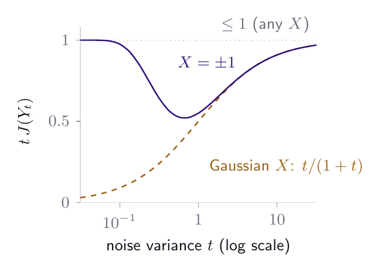

Under Gaussian smoothing, differential entropy grows at exactly half the rate of Fisher information
Published 18 November 2026: https://omidsolari.substack.com/p/the-quiet-theorems-no-01-de-bruijns
TL;DR. Adding independent Gaussian noise to a random variable makes it more spread out, so its differential entropy grows with the noise variance. De Bruijn’s identity, published by Stam (1959), gives the rate exactly: the derivative of the entropy with respect to the noise variance is half the Fisher information of the noisy variable. Half the Fisher information is therefore the rate at which Gaussian smoothing creates entropy.
Substack · PDF (A4) · PDF (screen) · Notebook · LaTeX source · Source · Open in Colab
Let \(X\) and \(Z\) be independent random variables on a probability space \((\Omega,\mathcal{F},\mathbb{P})\), with \(Z\sim\mathcal{N}(0,1)\) and \(X\) arbitrary (it may be discrete). For \(t>0\) set
\[ Y_t\mathrel{:=}X+\sqrt t\,Z . \]
\(J(Y_t)\) is the Fisher information of the location family \(\{p_t(\cdot-\theta):\theta\in\mathbb{R}\}\), since \(\partial_\theta\log p_t(y-\theta)=-\rho_t(y-\theta)\).
Assumption A1. \(\mathbb{E}X^2<\infty\).
Statements of the identity often assume that \(X\) has a smooth density; none is needed here, because the Gaussian noise supplies the regularity. A1 is used only to make \(h(Y_t)\) finite and to control the tails of \(\log p_t\).
Theorem (de Bruijn; Stam, 1959). Under A1, for every \(t>0\) the entropy \(h(Y_t)\) and the Fisher information \(J(Y_t)\) are finite, \(J(Y_t)\le 1/t\), and \(t\mapsto h(Y_t)\) is differentiable on \((0,\infty)\) with
\[ \frac{\mathrm{d}}{\mathrm{d}t}\,h\big(X+\sqrt t\,Z\big)=\frac12\,J\big(X+\sqrt t\,Z\big). \qquad (1) \]
Remark. For \(X\sim\mathcal{N}(\mu,\sigma^2)\), \(Y_t\) is a sum of independent Gaussians, so \(Y_t\sim\mathcal{N}(\mu,v)\) with \(v=\sigma^2+t\). Then \(-\log p_t(y)=\tfrac12\log(2\pi v)+(y-\mu)^2/(2v)\), and taking expectations with \(\mathbb{E}(Y_t-\mu)^2=v\) gives \(h(Y_t)=\tfrac12\log(2\pi ev)\). Differentiating \(\log p_t\) gives \(\rho_t(y)=-(y-\mu)/v\), so \(J(Y_t)=\mathbb{E}(Y_t-\mu)^2/v^2=1/v\). Both sides of (1) therefore equal \(1/(2v)=1/\big(2(\sigma^2+t)\big)\).
The proof differentiates \(h(Y_t)=-\int p_t\log p_t\) under the integral, uses the heat equation \(\partial_tp_t=\tfrac12p_t''\) to turn the \(t\)-derivative into a \(y\)-derivative, and integrates by parts once. The lemmas supply the regularity this needs. Throughout, \(0<a<b\) and \(t\in[a,b]\); constants may depend on \(a\), \(b\) and \(\mathbb{E}X^2\) but not on \(t\) or \(y\).
Lemma 1. The kernel satisfies \(\partial_t\varphi_t=\tfrac12\varphi_t''\), with \(\varphi_t'(z)=-(z/t)\varphi_t(z)\) and \(\varphi_t''(z)=(z^2/t^2-1/t)\varphi_t(z)\). With \(\Gamma(z)\mathrel{:=}(2\pi a)^{-1/2}e^{-z^2/(2b)}\), for \(t\in[a,b]\) and all \(z\),
\[ \varphi_t\le\Gamma,\qquad |\varphi_t'(z)|\le\tfrac{|z|}{a}\Gamma(z),\qquad |\varphi_t''(z)|\le\big(\tfrac{z^2}{a^2}+\tfrac1a\big)\Gamma(z). \qquad (2) \]
Moreover \(\Gamma=(b/a)^{1/2}\varphi_b\), so \(\int_{\mathbb{R}}|z|^k\Gamma(z)\,\mathrm{d}z=(b/a)^{1/2}\,b^{k/2}\,\mathbb{E}|Z|^k<\infty\) for every \(k\ge0\), and \(\sup_z|z|^k\Gamma(z)<\infty\).
Proof. Step 1: derivatives in \(z\). Since \(\log\varphi_t(z)=-\tfrac12\log(2\pi t)-z^2/(2t)\), we get \(\varphi_t'(z)=\varphi_t(z)\,\partial_z\log\varphi_t(z)=-(z/t)\varphi_t(z)\). By the product rule,
\[ \varphi_t''(z)=-\tfrac1t\varphi_t(z)-\tfrac zt\varphi_t'(z)=\Big(\frac{z^2}{t^2}-\frac1t\Big)\varphi_t(z). \]
Step 2: derivative in \(t\). \(\partial_t\log\varphi_t(z)=-\tfrac1{2t}+\tfrac{z^2}{2t^2}\), so \(\partial_t\varphi_t(z)=\big(\tfrac{z^2}{2t^2}-\tfrac1{2t}\big)\varphi_t(z)=\tfrac12\varphi_t''(z)\).
Step 3: bounds. For \(t\in[a,b]\), \((2\pi t)^{-1/2}\le(2\pi a)^{-1/2}\) and, as \(1/t\ge1/b\), \(e^{-z^2/(2t)}\le e^{-z^2/(2b)}\); hence \(\varphi_t\le\Gamma\). Then \(|\varphi_t'(z)|=(|z|/t)\varphi_t(z)\le(|z|/a)\Gamma(z)\), and by the triangle inequality \(|\varphi_t''(z)|\le(z^2/t^2+1/t)\varphi_t(z)\le(z^2/a^2+1/a)\Gamma(z)\).
Step 4: moments of \(\Gamma\). \((2\pi a)^{-1/2}=(b/a)^{1/2}(2\pi b)^{-1/2}\), so \(\Gamma=(b/a)^{1/2}\varphi_b\), and \(\int|z|^k\varphi_b(z)\,\mathrm{d}z=\mathbb{E}|\sqrt b\,Z|^k=b^{k/2}\mathbb{E}|Z|^k\), finite because \(Z\) has moments of all orders. Finally \(|z|^ke^{-z^2/(2b)}\) is continuous and tends to \(0\) as \(|z|\to\infty\), so it is bounded. ∎
Lemma 2. \(Y_t\) has the density \(p_t(y)=\mathbb{E}\,\varphi_t(y-X)>0\). The map \((t,y)\mapsto p_t(y)\) is continuously differentiable in \(t\) and twice continuously differentiable in \(y\) on \((0,\infty)\times\mathbb{R}\), with
\[ p_t^{(k)}(y)=\mathbb{E}\,\varphi_t^{(k)}(y-X)\ (k=1,2),\qquad \partial_t p_t=\tfrac12\,p_t'' . \qquad (3) \]
Moreover \(p_t'(y)\to0\) as \(|y|\to\infty\), and for \(t\in[a,b]\) and all \(y\),
\[ |\log p_t(y)|\le A+y^2/a,\qquad A\mathrel{:=}\tfrac12|\log(2\pi a)|+\tfrac12|\log(2\pi b)|+\mathbb{E}X^2/a . \qquad (4) \]
Proof. Step 1: density. Let \(\mu_X\) be the law of \(X\). As \(X\mathrel{\perp\!\!\!\perp}Z\), the law of \((X,Z)\) is \(\mu_X\otimes\mathcal{N}(0,1)\). For a Borel set \(B\), Tonelli’s theorem (the integrand is non-negative and jointly measurable) and the substitution \(y=x+\sqrt t\,z\) in the inner integral, with \(\mathrm{d}z=\mathrm{d}y/\sqrt t\) and \(\varphi_1\big((y-x)/\sqrt t\big)/\sqrt t=\varphi_t(y-x)\), give
\[ \begin{aligned} \mathbb{P}(Y_t\in B)&=\int_{\mathbb{R}}\int_{\mathbb{R}}\mathbf{1}\{x+\sqrt t\,z\in B\}\,\varphi_1(z)\,\mathrm{d}z\,\mu_X(\mathrm{d}x)\\ &=\int_{\mathbb{R}}\int_B\varphi_t(y-x)\,\mathrm{d}y\,\mu_X(\mathrm{d}x) =\int_B\mathbb{E}\,\varphi_t(y-X)\,\mathrm{d}y, \end{aligned} \]
the last step by Tonelli again, since \((x,y)\mapsto\varphi_t(y-x)\) is continuous and non-negative. So \(p_t(y)=\mathbb{E}\,\varphi_t(y-X)\) is a density of \(Y_t\), and \(p_t(y)>0\) because \(\varphi_t>0\).
Justification (differentiation under \(\mathbb{E}\)). Fix \(y\) and \(t\in(a,b)\). By (2) and Lemma 1,
\[ C_1\mathrel{:=}\sup_{z}\tfrac{|z|}{a}\Gamma(z)<\infty,\qquad C_2\mathrel{:=}\sup_z\big(\tfrac{z^2}{a^2}+\tfrac1a\big)\Gamma(z)<\infty \]
bound \(|\varphi_s'|\) and \(|\varphi_s''|\) for every \(s\in[a,b]\), and \(|\partial_s\varphi_s|=\tfrac12|\varphi_s''|\le\tfrac12C_2\). For \(h\ne0\), the mean value theorem gives
\[ \Big|\frac{\varphi_t(y+h-X)-\varphi_t(y-X)}{h}\Big|\le C_1, \qquad \Big|\frac{\varphi_{t+h}(y-X)-\varphi_t(y-X)}{h}\Big|\le\frac{C_2}2, \]
the second when \(t+h\in[a,b]\). Constants are integrable under \(\mathbb{P}\), so dominated convergence as \(h\to0\) gives \(p_t'(y)=\mathbb{E}\,\varphi_t'(y-X)\) and \(\partial_tp_t(y)=\mathbb{E}\,\partial_t\varphi_t(y-X)\). Repeating the first bound with \(\varphi_t'\) in place of \(\varphi_t\) and \(C_2\) in place of \(C_1\) gives \(p_t''(y)=\mathbb{E}\,\varphi_t''(y-X)\). Each integrand \(\varphi^{(k)}_s(y-X)\) and \(\partial_s\varphi_s(y-X)\) is continuous in \((s,y)\) for every value of \(X\) and bounded by a constant, so dominated convergence along sequences shows that \(p_t\), \(p_t'\), \(p_t''\) and \(\partial_tp_t\) are continuous on \((a,b)\times\mathbb{R}\). As \(0<a<b\) are arbitrary, this holds on \((0,\infty)\times\mathbb{R}\), and by Lemma 1, \(\partial_tp_t=\mathbb{E}\,\partial_t\varphi_t(y-X)=\tfrac12\mathbb{E}\,\varphi_t''(y-X)=\tfrac12p_t''\).
Step 2: decay. Let \(|y_n|\to\infty\). For each value of \(X\), \(|\varphi_t'(y_n-X)|\le(|y_n-X|/a)\Gamma(y_n-X)\to0\), since \(|z|\Gamma(z)\to0\) as \(|z|\to\infty\); and \(|\varphi_t'(y_n-X)|\le C_1\). Dominated convergence gives \(p_t'(y_n)=\mathbb{E}\,\varphi_t'(y_n-X)\to0\).
Step 3: upper log bound. \(p_t(y)=\mathbb{E}\,\varphi_t(y-X)\le\sup_z\varphi_t(z)=(2\pi t)^{-1/2}\le(2\pi a)^{-1/2}\), so \(\log p_t(y)\le-\tfrac12\log(2\pi a)\le\tfrac12|\log(2\pi a)|\le A+y^2/a\).
Step 4: lower log bound. \(\log\varphi_t(y-X)=-\tfrac12\log(2\pi t)-(y-X)^2/(2t)\) is integrable, because \((y-X)^2\le2y^2+2X^2\) and \(\mathbb{E}X^2<\infty\) (A1). As \(\log\) is concave and \(\varphi_t(y-X)\) is positive and integrable, Jensen’s inequality gives \(\log\mathbb{E}\,\varphi_t(y-X)\ge\mathbb{E}\log\varphi_t(y-X)\). Using \(t\le b\) in the first term and \(1/(2t)\le1/(2a)\) in the second,
\[ \log p_t(y)\ge-\tfrac12\log(2\pi t)-\frac{\mathbb{E}(y-X)^2}{2t}\ge-\tfrac12\log(2\pi b)-\frac{2y^2+2\mathbb{E}X^2}{2a}\ge-A-\frac{y^2}{a}. \]
Together with the upper bound this is (4). ∎
Lemma 3. For \(t>0\), \(\mathbb{E}[Z\mid Y_t]=-\sqrt t\,\rho_t(Y_t)\) almost surely. Consequently
\[ J(Y_t)=\frac{\mathbb{E}\big[(\mathbb{E}[Z\mid Y_t])^2\big]}{t}\le\frac1t . \qquad (5) \]
Proof. Step 1: an identity for bounded \(g\). Let \(g\) be bounded and Borel. Conditioning on \(X\) as in Lemma 2 and substituting \(y=x+\sqrt t\,z\), \(z=(y-x)/\sqrt t\), in the inner integral,
\[ \begin{aligned} \mathbb{E}[Z\,g(Y_t)]&=\int_{\mathbb{R}}\int_{\mathbb{R}}z\,g(x+\sqrt t z)\,\varphi_1(z)\,\mathrm{d}z\,\mu_X(\mathrm{d}x)\\ &=\int_{\mathbb{R}}\int_{\mathbb{R}}g(y)\,\frac{y-x}{\sqrt t}\,\varphi_t(y-x)\,\mathrm{d}y\,\mu_X(\mathrm{d}x)\\ &=-\sqrt t\int_{\mathbb{R}}\int_{\mathbb{R}}g(y)\,\varphi_t'(y-x)\,\mathrm{d}y\,\mu_X(\mathrm{d}x) =-\sqrt t\int_{\mathbb{R}}g(y)\,p_t'(y)\,\mathrm{d}y, \end{aligned} \]
using \((y-x)\varphi_t(y-x)=-t\,\varphi_t'(y-x)\) (Lemma 1) in the second line, then exchanging the integrals and applying (3).
Justification (Fubini). The integrands are jointly measurable, and by Tonelli \(\int\!\!\int|z\,g(x+\sqrt tz)|\varphi_1(z)\,\mathrm{d}z\,\mu_X(\mathrm{d}x)\le\sup|g|\,\mathbb{E}|Z|<\infty\). The same substitution shows that the double integral of \(|g(y)\varphi_t'(y-x)|\) equals this quantity divided by \(\sqrt t\), so both exchanges are justified by Fubini’s theorem.
Step 2: the score is integrable. Take \(g=\operatorname{sign}p_t'\), which is Borel because \(p_t'\) is continuous. The identity gives \(\sqrt t\int|p_t'|\,\mathrm{d}y=-\mathbb{E}[Z\,g(Y_t)]\le\mathbb{E}|Z|\), so \(\int|p_t'|\,\mathrm{d}y\le\mathbb{E}|Z|/\sqrt t\). Since \(Y_t\) has density \(p_t\), \(\mathbb{E}|\rho_t(Y_t)|=\int|p_t'/p_t|\,p_t\,\mathrm{d}y=\int|p_t'|\,\mathrm{d}y<\infty\).
Step 3: identification of the conditional expectation. For bounded Borel \(g\), \(-\sqrt t\int g\,p_t'\,\mathrm{d}y=\int g(y)\big(-\sqrt t\,\rho_t(y)\big)p_t(y)\,\mathrm{d}y=\mathbb{E}\big[g(Y_t)\big(-\sqrt t\,\rho_t(Y_t)\big)\big]\). So \(\mathbb{E}[ZW]=\mathbb{E}[W(-\sqrt t\,\rho_t(Y_t))]\) for every \(W=g(Y_t)\), and every bounded \(\sigma(Y_t)\)-measurable \(W\) has this form (Doob–Dynkin lemma). As \(\rho_t\) is continuous, \(-\sqrt t\,\rho_t(Y_t)\) is \(\sigma(Y_t)\)-measurable, and it is integrable by the previous step; it therefore satisfies the defining property of \(\mathbb{E}[Z\mid Y_t]\).
Step 4: Fisher information. By the definition of \(J\) and the previous step, \(J(Y_t)=\mathbb{E}\rho_t(Y_t)^2=\mathbb{E}\big[(\mathbb{E}[Z\mid Y_t])^2\big]/t\). Conditional Jensen gives \((\mathbb{E}[Z\mid Y_t])^2\le\mathbb{E}[Z^2\mid Y_t]\), and taking expectations, \(\mathbb{E}\big[(\mathbb{E}[Z\mid Y_t])^2\big]\le\mathbb{E}Z^2=1\). ∎
Lemma 4. If \(f\ge0\) is integrable on \(\mathbb{R}\), there are \(R_n\to\infty\) and \(R_n'\to\infty\), both increasing, with \(f(R_n)\to0\) and \(f(-R_n')\to0\).
Proof. Suppose that no increasing \(R_n\to\infty\) has \(f(R_n)\to0\). Then there are \(\varepsilon>0\) and \(M\) with \(f(y)\ge\varepsilon\) for all \(y\ge M\): otherwise, for each \(n\) we could pick \(R_n\ge\max(n,R_{n-1}+1)\) with \(f(R_n)<1/n\). Hence \(\int_M^\infty f\,\mathrm{d}y\ge\int_M^\infty\varepsilon\,\mathrm{d}y=\infty\), contradicting integrability. Applying this to \(y\mapsto f(-y)\) gives \(R_n'\). ∎
Proof of the theorem. Step 1: finiteness. By (4), \(|p_t\log p_t|\le p_t\,(A+y^2/a)\). Its integral is \(A+\mathbb{E}Y_t^2/a\), and \(\mathbb{E}Y_t^2=\mathbb{E}X^2+2\sqrt t\,\mathbb{E}X\,\mathbb{E}Z+t\,\mathbb{E}Z^2=\mathbb{E}X^2+t\) by independence and \(\mathbb{E}Z=0\). So \(p_t\log p_t\) is integrable and \(h(Y_t)\) is finite. That \(J(Y_t)\) is finite with \(J(Y_t)\le1/t\) is Lemma 3.
Step 2: differentiating the entropy. Write \(\eta_t(y)\mathrel{:=}-p_t(y)\log p_t(y)\), so that \(h(Y_t)=\int\eta_t\,\mathrm{d}y\). Fix \(y\). By Lemma 2, \(t\mapsto p_t(y)\) is positive and continuously differentiable, and \(u\mapsto-u\log u\) is continuously differentiable on \((0,\infty)\) with derivative \(-(1+\log u)\). By the chain rule and (3),
\[ \partial_t\eta_t(y)=-\big(1+\log p_t(y)\big)\,\partial_tp_t(y)=-\tfrac12\big(1+\log p_t(y)\big)\,p_t''(y). \]
Justification (dominated convergence in \(t\)). For \(t\in[a,b]\), (3) and (2) give \(|p_t''(y)|\le\mathbb{E}|\varphi_t''(y-X)|\le\mathbb{E}\big[\big(\tfrac{(y-X)^2}{a^2}+\tfrac1a\big)\Gamma(y-X)\big]\), and (4) gives \(|1+\log p_t(y)|\le1+A+y^2/a\). Hence
\[ |\partial_t\eta_t(y)|\le G(y)\mathrel{:=}\tfrac12\,\mathbb{E}\Big[\Big(\tfrac{(y-X)^2}{a^2}+\tfrac1a\Big)\Gamma(y-X)\Big]\,\big(1+A+y^2/a\big), \]
a bound that does not depend on \(t\). \(G\) is integrable: by Tonelli, then the substitution \(z=y-X\) for each value of \(X\) and \(y^2=(z+X)^2\le2z^2+2X^2\),
\[ \int_{\mathbb{R}}G\,\mathrm{d}y\le\tfrac12\,\mathbb{E}\int_{\mathbb{R}}\Big(\tfrac{z^2}{a^2}+\tfrac1a\Big)\Gamma(z)\Big(1+A+\tfrac{2z^2+2X^2}{a}\Big)\,\mathrm{d}z . \]
Expanding the product, the right side is a finite combination of \(\int|z|^k\Gamma(z)\,\mathrm{d}z\) for \(k\in\{0,2,4\}\) and of \(\mathbb{E}X^2\) times such integrals, all finite by Lemma 1 and A1. Now let \(t\in(a,b)\) and \(h\ne0\) with \(t+h\in[a,b]\). By the mean value theorem, \(\big(\eta_{t+h}(y)-\eta_t(y)\big)/h=\partial_s\eta_s(y)\) for some \(s\) between \(t\) and \(t+h\), so this quotient is bounded by \(G(y)\). Dominated convergence as \(h\to0\) gives
\[ \frac{\mathrm{d}}{\mathrm{d}t}h(Y_t)=\int_{\mathbb{R}}\partial_t\eta_t\,\mathrm{d}y=-\frac12\int_{\mathbb{R}}p_t''\,\mathrm{d}y-\frac12\int_{\mathbb{R}}p_t''\log p_t\,\mathrm{d}y . \]
Splitting the integral is allowed because both integrands are integrable: \(|p_t''|\) and \(|p_t''\log p_t|\) are bounded by multiples of the integrable functions \(\mathbb{E}\big[\big(\tfrac{(y-X)^2}{a^2}+\tfrac1a\big)\Gamma(y-X)\big]\) and \(G\). Every \(t>0\) lies in some \((a,b)\), so this holds for all \(t>0\).
Step 3: the constant term vanishes. Since \(p_t'\) is continuously differentiable in \(y\), \(\int_{-R'}^{R}p_t''\,\mathrm{d}y=p_t'(R)-p_t'(-R')\), which tends to \(0\) as \(R,R'\to\infty\) by the decay in Lemma 2. As \(p_t''\) is integrable, \(\int_{\mathbb{R}}p_t''\,\mathrm{d}y=\lim_{R,R'\to\infty}\int_{-R'}^{R}p_t''\,\mathrm{d}y=0\).
Step 4: integration by parts. On \([-R',R]\) the functions \(p_t'\) and \(\log p_t\) are continuously differentiable (\(p_t>0\)), and \((\log p_t)'=p_t'/p_t=\rho_t\). Integrating by parts,
\[ \int_{-R'}^{R}p_t''\log p_t\,\mathrm{d}y=\big[p_t'\log p_t\big]_{-R'}^{R}-\int_{-R'}^{R}\frac{(p_t')^2}{p_t}\,\mathrm{d}y . \]
Justification (limits along sequences). By (4) and (2), \(|p_t'\log p_t|\le\mathbb{E}\big[\tfrac{|y-X|}{a}\Gamma(y-X)\big]\,(A+y^2/a)\), which is integrable by the same Tonelli argument with \(|z|/a\) in place of \(z^2/a^2+1/a\). Lemma 4 applied to \(f=|p_t'\log p_t|\) gives increasing \(R_n,R_n'\to\infty\) along which the boundary term tends to \(0\). Along these sequences, \(\int_{-R_n'}^{R_n}p_t''\log p_t\,\mathrm{d}y\to\int_{\mathbb{R}}p_t''\log p_t\,\mathrm{d}y\) by dominated convergence (the integrand is integrable), and \(\int_{-R_n'}^{R_n}(p_t')^2/p_t\,\mathrm{d}y\) increases to \(\int_{\mathbb{R}}(p_t')^2/p_t\,\mathrm{d}y=J(Y_t)\) by monotone convergence. Hence \(\int_{\mathbb{R}}p_t''\log p_t\,\mathrm{d}y=-J(Y_t)\).
Step 5: conclusion. Substituting the last two steps into the derivative, \(\frac{\mathrm{d}}{\mathrm{d}t}h(Y_t)=-\tfrac12\cdot0-\tfrac12\big(-J(Y_t)\big)=\tfrac12J(Y_t)\), which is (1). ∎
Gaussian noise creates entropy at exactly half the rate of Fisher information. (pull quote)
The results below combine the theorem with a lower bound on \(J\) and with the posterior form of the score in Lemma 3.
Corollary 1. Under A1, \(J(Y_t)\ge1/\operatorname{Var}(Y_t)=1/(\sigma^2+t)\) for every \(t>0\), with equality if and only if \(X\) is Gaussian (possibly constant).
Proof. Let \(m=\mathbb{E}Y_t=\mu\) and \(v=\operatorname{Var}Y_t=\sigma^2+t\), by independence.
Step 1: a moment identity for the score. On \([-R',R]\), integration by parts gives \(\int_{-R'}^{R}(y-m)\,p_t'\,\mathrm{d}y=\big[(y-m)\,p_t\big]_{-R'}^{R}-\int_{-R'}^{R}p_t\,\mathrm{d}y\). Both \(|y-m|\,p_t\) and \(|y-m|\,|p_t'|\) are integrable: the first because \(\mathbb{E}|Y_t-m|<\infty\); the second because \(|y-m|\le|y-X|+|X-m|\) and, by Tonelli and the substitution \(z=y-X\), \(\int|y-m|\,|p_t'|\,\mathrm{d}y\le\mathbb{E}\int(|z|+|X-m|)\tfrac{|z|}{a}\Gamma(z)\,\mathrm{d}z<\infty\) (Lemma 1, A1). Lemma 4 applied to \(f=|y-m|\,p_t\) gives increasing \(R_n,R_n'\to\infty\) along which the boundary term tends to \(0\); dominated and monotone convergence then give
\[ \mathbb{E}\big[(Y_t-m)\,\rho_t(Y_t)\big]=\int_{\mathbb{R}}(y-m)\,\rho_t\,p_t\,\mathrm{d}y=\int_{\mathbb{R}}(y-m)\,p_t'\,\mathrm{d}y=-\int_{\mathbb{R}}p_t\,\mathrm{d}y=-1 . \]
Step 2: Cauchy–Schwarz. \(1=\big(\mathbb{E}[(Y_t-m)\rho_t(Y_t)]\big)^2\le\mathbb{E}(Y_t-m)^2\,\mathbb{E}\rho_t(Y_t)^2=v\,J(Y_t)\), which is the bound.
Step 3: equality forces a Gaussian. Equality in Cauchy–Schwarz holds only if \(\rho_t(Y_t)\) and \(Y_t-m\) are linearly dependent almost surely. As \(Y_t-m\) is not almost surely \(0\) (\(v\ge t>0\)), \(\rho_t(Y_t)=c\,(Y_t-m)\) almost surely for a constant \(c\), and the moment identity gives \(-1=c\,v\), so \(c=-1/v\). The set \(\{y:\rho_t(y)\ne-(y-m)/v\}\) is open, since \(\rho_t\) is continuous, and has probability \(0\) under a law with an everywhere positive density, so it has Lebesgue measure \(0\); an open set of measure \(0\) is empty. So \((\log p_t)'(y)=-(y-m)/v\) for all \(y\), hence \(p_t(y)=p_t(m)\,e^{-(y-m)^2/(2v)}\), and \(\int p_t=1\) forces \(p_t\) to be the \(\mathcal{N}(m,v)\) density. By independence, the characteristic functions satisfy \(\mathbb{E}e^{isY_t}=\mathbb{E}e^{isX}\,e^{-ts^2/2}\), so
\[ \mathbb{E}e^{isX}=e^{ims-vs^2/2}\,e^{ts^2/2}=e^{ims-\sigma^2s^2/2}\qquad(s\in\mathbb{R}), \]
which is the characteristic function of \(\mathcal{N}(m,\sigma^2)\); by uniqueness \(X\sim\mathcal{N}(m,\sigma^2)\), a constant if \(\sigma^2=0\). Conversely, the remark gives \(J(Y_t)=1/(\sigma^2+t)\) for Gaussian \(X\). ∎
Corollary 2. Under A1, for \(0<a<b\),
\[ \frac12\log\frac{\sigma^2+b}{\sigma^2+a}\;\le\;h(Y_b)-h(Y_a)\;\le\;\frac12\log\frac ba , \]
with equality on the left if and only if \(X\) is Gaussian.
Proof. Let \(f(t)\mathrel{:=}h(Y_t)\). By the theorem, \(f\) is differentiable on \((0,\infty)\) with \(f'(t)=\tfrac12J(Y_t)\), and by Corollary 1 and Lemma 3,
\[ \frac1{2(\sigma^2+t)}\le f'(t)\le\frac1{2t}\qquad(t>0). \]
On \([a,b]\), \(|f'|\le1/(2a)\), so \(f\) is Lipschitz there by the mean value theorem, hence absolutely continuous, and \(f(b)-f(a)=\int_a^bf'(t)\,\mathrm{d}t\). Integrating the two bounds, \(\int_a^b\frac{\mathrm{d}t}{2(\sigma^2+t)}=\frac12\log\frac{\sigma^2+b}{\sigma^2+a}\) and \(\int_a^b\frac{\mathrm{d}t}{2t}=\frac12\log\frac ba\). If equality holds on the left, then \(\int_a^b\big(f'(t)-\frac1{2(\sigma^2+t)}\big)\,\mathrm{d}t=0\) with a non-negative integrand, so \(f'(t)=1/(2(\sigma^2+t))\), that is \(J(Y_t)=1/(\sigma^2+t)\), for almost every \(t\in(a,b)\); one such \(t\) suffices for Corollary 1 to make \(X\) Gaussian. Conversely, for Gaussian \(X\) the lower bound on \(f'\) is attained for every \(t\) (the remark). ∎
The upper bound is the entropy increment of pure noise, \(h(\sqrt bZ)-h(\sqrt aZ)\): smoothing an arbitrary input never adds entropy faster than smoothing a point mass.
Let \(\mathrm{mmse}(t)\mathrel{:=}\mathbb{E}\big(X-\mathbb{E}[X\mid Y_t]\big)^2\), the minimum mean-square error in estimating \(X\) from \(Y_t\).
Corollary 3. Under A1, for every \(t>0\),
\[ J(Y_t)=\frac1t-\frac{\mathrm{mmse}(t)}{t^2}, \qquad\text{hence}\qquad \frac{\mathrm{d}}{\mathrm{d}t}h(Y_t)=\frac1{2t}-\frac{\mathrm{mmse}(t)}{2t^2}. \]
Proof. Step 1: the two errors. Since \(X=Y_t-\sqrt t\,Z\) and \(Y_t\) is \(\sigma(Y_t)\)-measurable, linearity of conditional expectation gives \(\mathbb{E}[X\mid Y_t]=Y_t-\sqrt t\,\mathbb{E}[Z\mid Y_t]\), so \(X-\mathbb{E}[X\mid Y_t]=-\sqrt t\,\big(Z-\mathbb{E}[Z\mid Y_t]\big)\) and \(\mathrm{mmse}(t)=t\,\mathbb{E}\big(Z-\mathbb{E}[Z\mid Y_t]\big)^2\).
Step 2: orthogonality. Write \(W=\mathbb{E}[Z\mid Y_t]\), which is square integrable since \(\mathbb{E}W^2\le\mathbb{E}Z^2=1\). By the tower property, \(\mathbb{E}[ZW]=\mathbb{E}\big[\mathbb{E}[Z\mid Y_t]\,W\big]=\mathbb{E}W^2\). Expanding, \(\mathbb{E}(Z-W)^2=\mathbb{E}Z^2-2\mathbb{E}[ZW]+\mathbb{E}W^2=1-\mathbb{E}W^2\). Hence \(\mathbb{E}W^2=1-\mathrm{mmse}(t)/t\).
Step 3: conclusion. By (5), \(J(Y_t)=\mathbb{E}W^2/t=\big(1-\mathrm{mmse}(t)/t\big)/t=1/t-\mathrm{mmse}(t)/t^2\). Multiplying by \(\tfrac12\) and using (1) gives the second formula. ∎
Write \(I(t)\mathrel{:=}h(Y_t)-h(\sqrt tZ)=h(Y_t)-\tfrac12\log(2\pi et)\), which is the mutual information between \(X\) and \(Y_t\) (not proved here; see Guo, Shamai and Verdú, 2005). Since \(\frac{\mathrm{d}}{\mathrm{d}t}\tfrac12\log(2\pi et)=\frac1{2t}\), Corollary 3 gives \(I'(t)=-\mathrm{mmse}(t)/(2t^2)\). With the signal-to-noise ratio \(s=1/t\), so that \(\mathrm{d}t/\mathrm{d}s=-1/s^2\) and \(ts=1\), the chain rule gives
\[ \frac{\mathrm{d}I}{\mathrm{d}s}=I'(t)\,\frac{\mathrm{d}t}{\mathrm{d}s}=\frac{\mathrm{mmse}(t)}{2t^2}\cdot\frac1{s^2}=\frac12\,\mathrm{mmse}(1/s), \]
the information–estimation relation of Guo, Shamai and Verdú (2005). Through Corollary 3, de Bruijn’s identity and that relation are the same statement in different coordinates.
Let \(X\) take the values \(\pm1\) with probability \(\tfrac12\) each, so \(\mu=0\), \(\sigma^2=1\). Then \(Y_t\) is a two-component Gaussian mixture and everything is explicit.
Density and posterior mean. By Lemma 2, \(p_t(y)=\tfrac12\big[\varphi_t(y-1)+\varphi_t(y+1)\big]\). Since \((y\mp1)^2=y^2\mp2y+1\), \(\varphi_t(y\mp1)=\varphi_t(y)\,e^{\pm y/t-1/(2t)}\), and so
\[ p_t(y)=\varphi_t(y)\,e^{-1/(2t)}\cosh(y/t). \]
For bounded Borel \(g\), the computation in the proof of Lemma 2 gives \(\mathbb{E}[X\,g(Y_t)]=\int g(y)\,\tfrac12\big[\varphi_t(y-1)-\varphi_t(y+1)\big]\,\mathrm{d}y=\int g(y)\tanh(y/t)\,p_t(y)\,\mathrm{d}y\), because \(\tfrac12[\varphi_t(y-1)-\varphi_t(y+1)]=\varphi_t(y)e^{-1/(2t)}\sinh(y/t)\). Hence \(\mathbb{E}[X\mid Y_t]=\tanh(Y_t/t)\).
Score, entropy and error. Since \(\log p_t(y)=\log\varphi_t(y)-\tfrac1{2t}+\log\cosh(y/t)\), differentiation gives \(\rho_t(y)=\big(\tanh(y/t)-y\big)/t\). Taking expectations in \(-\log p_t(Y_t)=\tfrac12\log(2\pi t)+Y_t^2/(2t)+1/(2t)-\log\cosh(Y_t/t)\), with \(\mathbb{E}Y_t^2=1+t\),
\[ h(Y_t)=\tfrac12\log(2\pi et)+\tfrac1t-\mathbb{E}\log\cosh(Y_t/t), \qquad \mathrm{mmse}(t)=1-\mathbb{E}\tanh^2(Y_t/t). \]
For the second formula, write \(T=\tanh(Y_t/t)\) and expand \(\mathbb{E}(X-T)^2=\mathbb{E}X^2-2\mathbb{E}[XT]+\mathbb{E}T^2\). Here \(\mathbb{E}X^2=1\), and the tower property gives \(\mathbb{E}[XT]=\mathbb{E}\big[\mathbb{E}[X\mid Y_t]\,T\big]=\mathbb{E}T^2\).
Two regimes. For small \(t\) the components barely overlap: \(\mathbb{E}\log\cosh(Y_t/t)\approx1/t-\log2\), so \(h(Y_t)\approx\tfrac12\log(2\pi et)+\log2\), the entropy of noise plus one bit, and \(t\,J(Y_t)\approx1\). For large \(t\) the mixture is close to \(\mathcal{N}(0,1+t)\) and \(t\,J(Y_t)\approx t/(1+t)\). The figure shows \(t\,J(Y_t)\) between the two bounds of Corollary 1 and Lemma 3, \(t/(1+t)\le tJ(Y_t)\le1\).

Scaled Fisher information t·J(Yₜ) for X = ±1 (computed by code/check.py) and for Gaussian X with the same variance. The Gaussian input has the least Fisher information, so its entropy grows most slowly; the two-point input starts at the noise-only rate and merges with the Gaussian curve as the noise dominates.
All quantities use adaptive quadrature of the closed forms above; \(\mathrm{d}h/\mathrm{d}t\) uses a four-point central difference with step \(10^{-3}\).
Rows 1–2 check the remark; rows 3–5 check (1), Corollary 3 and Corollary 2 for a discrete input. Rows 3–4 are at rounding level, so their last digits may vary across library versions.
Code. Every number above is printed by the script below (Python 3, NumPy, SciPy); its docstring gives the requirements.
"""The Quiet Theorems No. 01: numerical check.
Prints every number in the PDF's check table.
Requires Python >= 3.8, NumPy >= 1.20 and
SciPy >= 1.6.
Tested with Python 3.13, NumPy 2.5, SciPy 1.18.
Run: python3 check.py
"""
import numpy as np
from scipy.integrate import quad
def logphi(z, t):
return -z * z / (2 * t) - 0.5 * np.log(2 * np.pi * t)
# Y_t = X + sqrt(t) Z for two inputs X.
# Each returns (log p_t(y), score p_t'(y)/p_t(y)).
def gauss(y, t): # X ~ N(0, 1)
v = 1 + t
return logphi(y, v), -y / v
def lcosh(u): # log cosh, overflow-safe
u = abs(u)
return u + np.log1p(np.exp(-2 * u)) - np.log(2)
def rade(y, t): # X = +1 or -1, prob 1/2 each
lp = logphi(y, t) + lcosh(y / t) - 1 / (2 * t)
return lp, (np.tanh(y / t) - y) / t
def E(f, model, t):
"""E[f(y)] under Y_t, adaptive quadrature."""
L = 2 + 14 * np.sqrt(1 + t)
def g(y):
return np.exp(model(y, t)[0]) * f(y)
return quad(g, -L, L, limit=400, points=[0],
epsabs=1e-14, epsrel=1e-13)[0]
def h(model, t): # differential entropy
return E(lambda y: -model(y, t)[0], model, t)
def J(model, t): # Fisher information
return E(lambda y: model(y, t)[1] ** 2, model, t)
def dh(model, t, d=1e-3): # 4-point difference
f = [h(model, t + k * d) for k in (-2, -1, 1, 2)]
return (f[0] - 8 * f[1] + 8 * f[2] - f[3]) / (12 * d)
# 1-2. Gaussian X, t = 1: dh/dt = J/2 = 1/4.
print(f"Gauss dh/dt: {dh(gauss, 1.0):.6f}")
print(f"Gauss J: {J(gauss, 1.0):.6f}")
# 3. Rademacher X, t = 1/2: de Bruijn residual.
t = 0.5
a, b = dh(rade, t), J(rade, t) / 2
print(f"Rade dh/dt: {a:.6f}")
print(f"Rade J/2: {b:.6f}")
print(f"Difference: {a - b:.1e}")
# 4. Fisher information versus MMSE:
# J = 1/t - mmse/t^2, mmse = 1 - E tanh^2(Y/t).
th2 = E(lambda y: np.tanh(y / t) ** 2, rade, t)
mmse = 1 - th2
print(f"Rade mmse: {mmse:.6f}")
a, b = J(rade, t), 1 / t - mmse / t ** 2
print(f"Rade J: {a:.6f}")
print(f"1/t-mmse/t^2: {b:.6f}")
print(f"Difference: {a - b:.1e}")
# 5. Entropy sandwich on [1/2, 1], Var X = 1.
inc = h(rade, 1.0) - h(rade, 0.5)
lo, hi = 0.5 * np.log(2 / 1.5), 0.5 * np.log(2)
print(f"Increment: {inc:.4f}")
print(f"Bounds: [{lo:.4f}, {hi:.4f}]")
# 6. Figure data: t J(Y_t) for Rademacher X
# and the Gaussian lower bound t/(1+t).
for e in np.linspace(-1.5, 1.5, 25):
s = 10 ** e
print(f"fig {e:+.2f} {s * J(rade, s):.4f}"
f" {s / (1 + s):.4f}")Output:
Gauss dh/dt: 0.250000
Gauss J: 0.500000
Rade dh/dt: 0.537964
Rade J/2: 0.537964
Difference: -1.9e-11
Rade mmse: 0.231018
Rade J: 1.075927
1/t-mmse/t^2: 1.075927
Difference: 2.2e-16
Increment: 0.1833
Bounds: [0.1438, 0.3466]
fig -1.50 1.0000 0.0307
fig -1.38 1.0000 0.0405
fig -1.25 0.9993 0.0532
fig -1.12 0.9946 0.0698
fig -1.00 0.9759 0.0909
fig -0.88 0.9291 0.1177
fig -0.75 0.8483 0.1510
fig -0.62 0.7451 0.1917
fig -0.50 0.6435 0.2403
fig -0.38 0.5664 0.2966
fig -0.25 0.5263 0.3599
fig -0.12 0.5235 0.4285
fig +0.00 0.5504 0.5000
fig +0.12 0.5965 0.5715
fig +0.25 0.6517 0.6401
fig +0.38 0.7085 0.7034
fig +0.50 0.7619 0.7597
fig +0.62 0.8092 0.8083
fig +0.75 0.8493 0.8490
fig +0.88 0.8825 0.8823
fig +1.00 0.9091 0.9091
fig +1.12 0.9303 0.9302
fig +1.25 0.9468 0.9468
fig +1.38 0.9595 0.9595
fig +1.50 0.9693 0.9693The identity is due to N. G. de Bruijn, who communicated it to the director of physical research of the Netherlands Defence Research Council, at whose suggestion A. J. Stam had undertaken the work. Stam published it as equation (2.12) of Some inequalities satisfied by the quantities of information of Fisher and Shannon (Stam, 1959), where, together with an inequality for the Fisher information of sums, it yields a proof of the entropy power inequality stated by Shannon (1948). Stam gave the identity in differential form. Barron (1986, Lemma 1) proved an integral form for \(X\) with finite variance, writing the entropy as an integral of Fisher informations, and used it to prove a central limit theorem in relative entropy.
Barron, A. R. (1986). Entropy and the central limit theorem. Annals of Probability, 14(1), 336–342.
Efron, B. (2011). Tweedie’s formula and selection bias. Journal of the American Statistical Association, 106(496), 1602–1614.
Guo, D., Shamai, S. and Verdú, S. (2005). Mutual information and minimum mean-square error in Gaussian channels. IEEE Transactions on Information Theory, 51(4), 1261–1282.
Shannon, C. E. (1948). A mathematical theory of communication. Bell System Technical Journal, 27, 379–423, 623–656.
Stam, A. J. (1959). Some inequalities satisfied by the quantities of information of Fisher and Shannon. Information and Control, 2(2), 101–112.